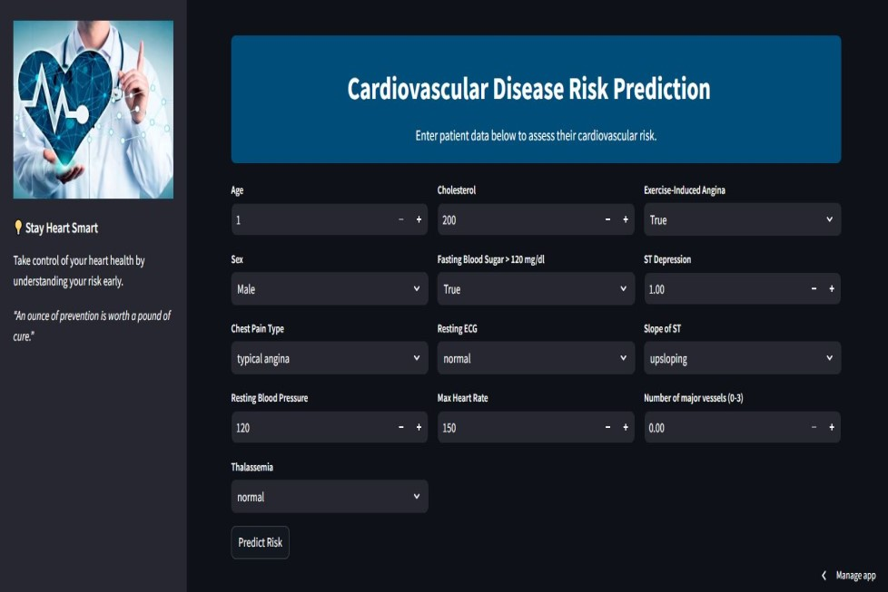

Cardiovascular Disease Risk Prediction
Cardiovascular disease is among the leading causes of death worldwide, and this calls for urgent and innovative methods for early risk prediction and intervention. Traditional cardiovascular disease risk prediction models are based on limited risk factors and are inaccurate in diverse populations. Machine learning enhances prediction by examining complex patterns in datasets to provide individualized risk assessments.
In order to enhance the predictive power of the traditional cardiovascular techniques, the Cleveland Heart Disease dataset was used as the study dataset, and Multilayer Perceptron (MLP) machine learning model was trained and evaluated on the dataset. The MLP model had a 90.67% F1-Score on the dataset.
The MLP model was deployed on streamlit web application to allow for real time prediction of cardiovascular disease risk. The project emphasizes the clinical value of supervised learning models in cardiovascular risk prediction to facilitate early detection.
Experiment here
-

Steamlit Webpage UI